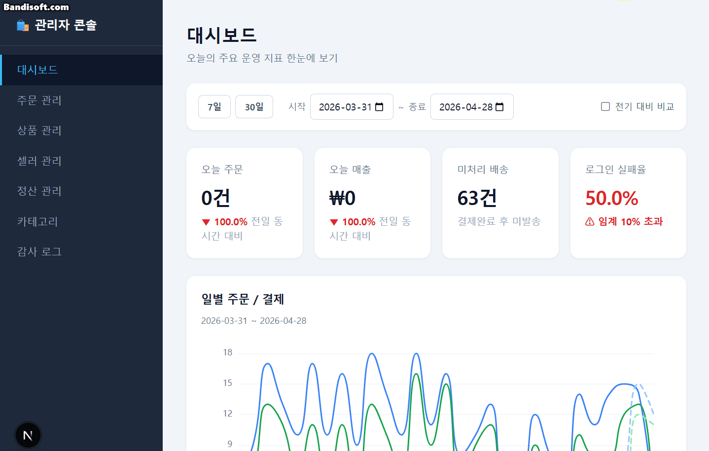
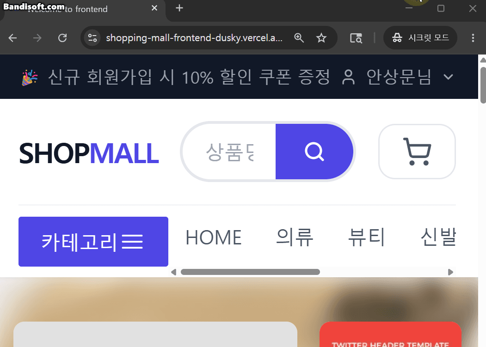
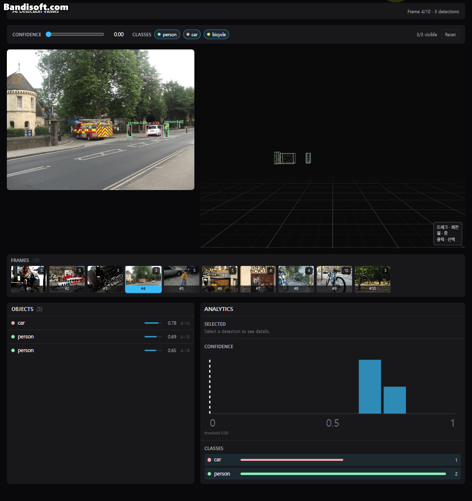
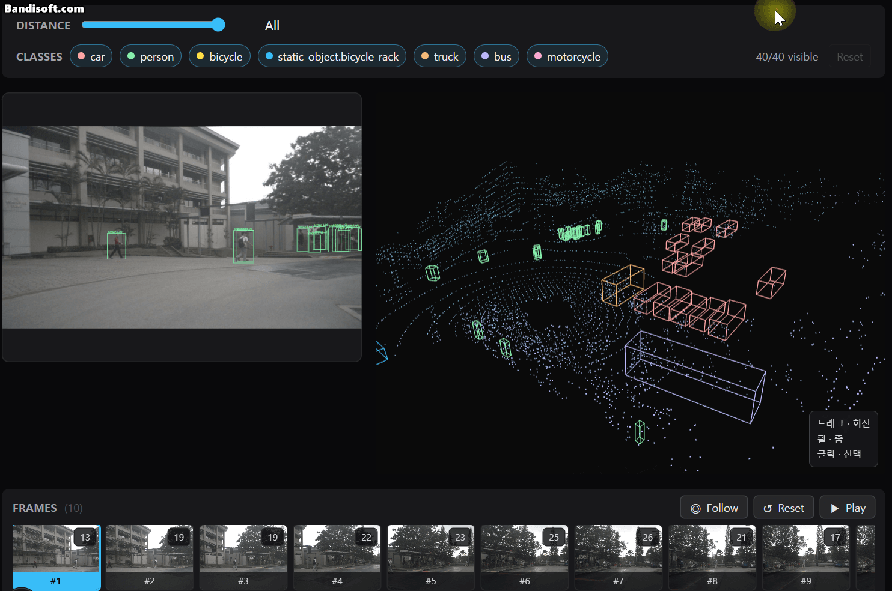
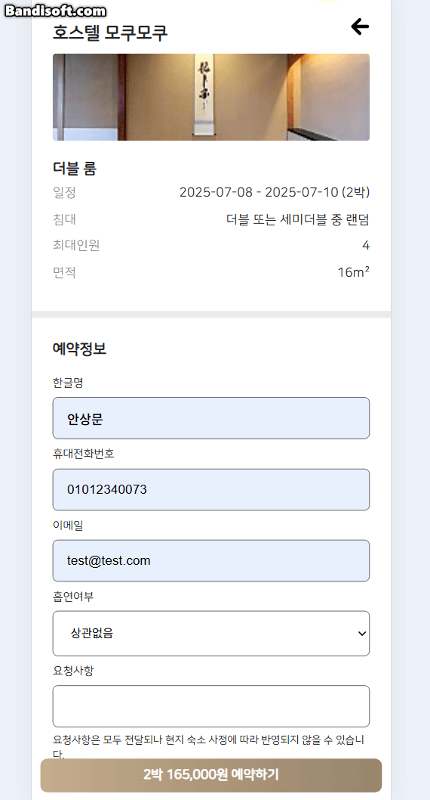

프로젝트 / Projects — 카드를 누르면 펼쳐지고, 탭으로 내용을 전환합니다
01
E-커머스 쇼핑몰
구매자·판매자·관리자 3개 역할로 분리한 멀티 셀러 오픈마켓 풀스택 — 인증/결제 정합성을 설계 단계부터 직접 해결.
여러 판매자가 한 플랫폼에 입점하는 멀티 셀러 오픈마켓입니다. 판매자가 등록한 상품을 관리자가 승인해야 노출되고, 한 주문에 여러 판매자 상품이 섞이므로 배송과 정산을 판매자별로 분리해야 합니다. 여기에 PortOne V2 결제·정산·관리자 KPI 대시보드까지 이커머스 전체 흐름을 1인 풀스택(프론트·백·인프라)으로 구현했습니다. 본 포트폴리오는 프론트엔드 직무 기준으로 서술하며, 백엔드·인프라는 보조로 둡니다.
프론트(Vercel·Next.js)는 Vercel rewrites 프록시를 거쳐 백엔드(EC2·NestJS)를 같은 출처처럼 호출합니다 — cross-domain 쿠키 문제와 App Router의 cookies().set() 제약을 동시에 우회하기 위한 선택입니다. 인증은 Access=메모리 / Refresh=httpOnly 쿠키 회전에 Edge → Server → Client 3중 방어를 적용했고, 데이터는 RSC에서 prefetch → dehydrate → HydrationBoundary로 넘긴 뒤 TanStack Query가 캐시·무효화를 담당합니다.


- ECharts 4종(이중 Y축 라인·3-line stack·Funnel·KPI 카드)
- 차트별 staleTime 4단계 차등(KPI 1분·주문/보안 5분·펀넬 10분) — 변경 빈도에 맞춰 재요청·백엔드 부하 절감
- dynamic(ssr:false) 코드 스플리팅 — 대시보드 First Load JS 138kB(홈 145kB보다 가벼움)

- Access=메모리 / Refresh=httpOnly 회전 — XSS로 access 탈취 방지 + refresh JS 접근 차단
- BroadcastChannel로 새 탭이 다른 탭에 토큰 요청(REQUEST/RESPONSE) → 세션 인계, 로그아웃은 전 탭 전파
- 컴포넌트 axios 직접 호출 0건 — public/auth 클라이언트 분리로 공개 호출에 토큰 누출 방지
// 이미 refresh 중이면 기존 Promise 반환
if (isRefreshing && refreshPromise) {
return refreshPromise;
}
isRefreshing = true;
refreshPromise = (async () => {
try {
const response =
await publicClient.post(REFRESH_API_ENDPOINT);
// 새 토큰으로 원래 요청 재시도
Return authClient(originalRequest);// 수정 전: update 만 호출 -> verify와 webhook이 동시 PAID 처리
// 수정 후: 락 + 재검증으로 한 번만 PAID
const updated = await this.dataSource.transaction(
async (manager) => {
const locked = await manager
.createQueryBuilder(PaymentEntity, 'p')
.setLock('pessimistic_write')
.where('p.id = :id', { id: payment.id })
.getOne();
// 트랜잭션 내 재검증: 웹훅이 먼저 처리했을 수 있음
if (locked.status === PaymentStatus.PAID)
return null;
Lighthouse 점검 중 홈만 LCP가 Slow 4G에서 33.7s(Performance 66)임을 발견 → lcp-discovery-insight로 CSS background-image의 2.9MB PNG 히어로 배경을 병목으로 특정(FCP 2s vs LCP 35s 격차가 곧 이미지 다운로드 시간) → sharp로 WebP 변환 + next/image fill priority로 교체해 preload fetchpriority 자동 적용.
- 모노레포 약 32500줄 (frontend 9,424 / backend 22,092 / shared 989)
- frontend/src TypeScript 100% (.js/.jsx 0개), Next.js 34페이지를 3 route group으로 분리
- 컴포넌트 axios 직접 호출 0건(service 10개 모듈 경유), staleTime 4단계 차등, First Load JS ≤ 183kB
- 결제·인증의 동시성·보안 문제를 재현→분석→방어→회귀 테스트까지 닫음
- 모든 성능 수치를 측정 방법과 함께 기록
- 프론트 테스트가 얇음 (FE 1 vs BE 21)
- 접근성이 기본 ARIA 수준
- dynamic import 전후 번들 정량 비교 미측정
- Nginx 미도입으로 Next.js 프록시 사용
- 401 인터셉터·결제 멱등 등 동시성 경계 코드부터 테스트로 박제
- 디자인 토큰을 Storybook 카탈로그로 정리
- Nginx 도입으로 리버스 프록시 계층 분리
02
AI Object Detection Viewer
AI 객체 탐지(COCO) 결과를 2D·3D에서 동시에 탐색하고, 4개 뷰가 단일 선택 상태를 공유하는 멀티뷰 동기화 시각화 뷰어.
객체 탐지 결과(COCO)를 보통 2D 박스로만 보는 것과 달리, 같은 결과를 2D 이미지와 3D 공간에서 동시에 탐색합니다. 한 객체를 어느 뷰에서 선택하든 4개 뷰(2D·3D·리스트·분석)가 동시에 같은 객체를 가리키도록 설계했습니다. 데이터 소스가 정적 JSON 1개인 클라이언트 SPA입니다 — R3F Canvas가 SSR 불가라 전 페이지 클라이언트 렌더.
정적 COCO JSON → lib/ 순수 함수 계층(parser·estimator·selector)이 외부 입력을 unknown으로 받아 isCocoDataset 타입 술어로 검증 후 내부 Frame[]로 변환 → Zustand store(단일 선택 상태)를 4뷰가 각자 필요한 slice만 구독. lib/와 components/를 분리해 React 밖에서 JSDOM 없이 테스트하고 변경 영향을 격리했습니다.


- 단일 source of truth — 선택 상태를 쪼개지 않음2D·3D 뷰별로 selected2D/3DObjectId를 따로 두지 않고 store의 selectedObjectId 한 필드를 4뷰가 공유 — 어느 뷰에서 클릭해도 나머지가 같은 객체를 하이라이트
- slice selector 구독 — 불필요한 리렌더 차단각 뷰가 useViewerStore((s) => s.필드)로 자기가 쓰는 슬라이스만 구독 → 무관한 상태(필터·프레임 등)가 바뀌어도 해당 뷰는 리렌더되지 않음
- 프레임 전환 합성은 page 레이어에서handleSelectFrame: 같은 id면 early-return(no-op), 다르면 프레임 set — 추적이 없는 COCO만 선택 해제, 추적되는 nuScenes는 선택 유지. store 액션은 단일 책임으로 두고 "언제 지울지"만 page가 합성

- drei <Grid> raycast를 no-op 오버라이드 — infiniteGrid는 실제론 거대한 plane mesh라 raycast가 항상 그리드에 맞아 onPointerMissed가 안 터짐 → 마운트 시 grid.raycast = () => {}로 덮어써 빈 공간 클릭 → 선택 해제 계약을 복구
- 불가시 mesh + THREE.DoubleSide로 내부 시점 raycast 보강 — 박스를 선(line segments)만으론 클릭하기 어려워, opacity 0인 꽉 찬 mesh를 겹쳐 raycast 타깃 확보 — THREE.DoubleSide로 카메라가 박스 안으로 들어와도 내부 시점에서 클릭이 등록됨
- useFrame sin 펄스로 선택 강조 — 선택된 박스를 1 + sin(t·freq)·amp 스케일로 매 프레임 맥동시켜 시선을 유도 — 별도 애니메이션 루프 없이 R3F 렌더 틱에 얹어 비용 없이 처리

- 재생 로직을 React 밖 순수 함수로 분리 — 다음 프레임 인덱스를 계산하는 nextFrameIndex는 React·store·Three.js를 일절 모르는 순수 함수로 빼서 단위 테스트로 검증. 빈 시퀀스·범위를 벗어난 stale 인덱스도 방어해 타이머가 배열 밖을 가리키는 일이 없게 처리.
- stale closure 회피 — setInterval(500ms ≈ 실제 nuScenes 2Hz 주기)이 매 tick마다 클로저에 갇힌 값 대신 store.getState()로 현재 프레임을 직접 읽음. 프레임이 진행돼도 타이머가 낡은 상태를 참조하지 않음.
- 2계층 시계 — 키프레임 스냅 위에 부드러운 보간 — 0.5초 간격 키프레임을 매번 끊어 보여주는 대신, useFrame으로 현재→다음 키프레임 pose를 보간. 위치는 lerp, 회전은 최단 호를 따르는 slerp로 블렌딩해 박스가 자연스럽게 이동.
- "측정값"의 정직성 유지 — 보간된 중간 pose는 실측이 아니므로, tween은 재생 중에만 동작하고 일시정지·스크럽 시엔 정확한 키프레임(t=0/t=1에서 끝점 그대로)을 표시. "Measured" 뱃지는 항상 실측 키프레임만 가리킴.
- 추적이 성립하는 데이터에만 재생 UI 노출 — nuScenes는 instance id가 프레임 간 유지(track id)되어 재생이 진짜 움직임이 되지만, COCO는 프레임이 서로 독립이라 재생이 무의미한 슬라이드쇼. 그래서 재생/팔로우 컨트롤은 nuScenes에서만 렌더링하고, 진행 시에도 추적 중인 selectedObjectId를 유지(COCO의 프레임 전환과 달리 선택을 초기화하지 않음).
// PointCloud.tsx — 명령형 BufferGeometry는 R3F 자동 dispose 대상이 아님
// (JSX 자식이 아니라 prop 주입).
const geometry = useMemo(() => {
const geom = new THREE.BufferGeometry();
geom.setAttribute('position', new THREE.BufferAttribute(positions, 3));
return geom;
}, [visiblePoints]);
// 필터(visibleIds) 변경 → geometry 재생성
// → 이전 인스턴스가 GPU에 잔존
// WebGL 버퍼는 JS GC가 회수 못 함
// → cleanup에서 명시 해제. 누적 12→49가 4~12로 안정.
useEffect(() => () => geometry.dispose(), [geometry]);
return // SVG는 CSS z-index 무시 -> paint order = hit-test 순서
// 면적 오름차순 정렬 -> 큰 bbox가 마지막에 paint -> 클릭 우선
const detections = (
visibleIds
? frame.detections2D.filter(
(d) => visibleIds.has(d.id))
: frame.detections2D
)
.slice()
.sort(
(a, b) =>
a.bbox.width * a.bbox.height
- b.bbox.width * b.bbox.height,
);- 테스트 코드가 프로덕션 코드와 거의 동량(34.5% · 1,021/2,962줄)
- 그 테스트가 docs/edgecases/Edge_#N.md 문서와 1:1로 매핑 — 발견한 엣지케이스가 잊히지 않는 시스템
- GPU geometry 누수 49 → 누적 0 (WebGLRenderer.info 콘솔 1초 간격 측정)
- GPU 메모리 누수를 직접 측정·audit해 누적 0으로 (README·Edge·커밋 3중 기록)
- 4뷰 선택을 단일 source of truth로 설계
- 순수 함수 분리로 테스트성·변경 격리 확보
- 단일 source of truth라면서 키보드 객체 선택 불가(접근성 모순)
- 자주 고친 page.tsx·Viewer2D에 RTL 테스트 0
- 데이터 수천 개면 eager-enrich 블로킹 · 가상화/InstancedMesh 부재
- 지금 당장: Error Boundary·키보드 선택 / 데이터 커지면: lazy enrich·InstancedMesh·가상화 (우선순위 구분)
- 자주 바뀌는 page.tsx·Viewer2D부터 RTL 테스트로 보강
- KITTI 데이터셋 연동
03
JAPAN HOTEL RESERVATION
일본 호텔을 둘러보고 날짜·인원·객실을 선택해 예약까지 진행하는 웹앱 — "예약 흐름의 내부 상태"가 궁금해서 직접 구현.
"가장 많이 써봤지만 한 번도 직접 만들어 본 적 없는 기능"인 호텔 예약을 주제로, 날짜·인원·객실 선택부터 예약 요약·완료까지의 흐름을 혼자 구현하며 React 기반 프론트엔드 개발 흐름을 정리한 프로젝트입니다. 결제(PG 연동)는 권한 이슈로 미구현 — 현재는 "예약 완료" 페이지까지 동작합니다.
상태 성격에 맞춰 도구를 분리한 것이 핵심입니다 — 검색어·내비 같은 가벼운 전역 값은 Recoil, 예약처럼 단계별로 묶이는 상태는 Redux Toolkit, 서버 데이터(호텔·객실·리뷰·예약)는 React Query로 나눴습니다. 컴포넌트가 Firebase를 직접 부르지 않도록 remote → hooks(React Query) → components 3계층으로 흐르게 구성했습니다.


- 단계별로 묶이는 예약 상태를 Redux Toolkit으로 관리
- 새로고침·직접 진입 대비 null 가드 + sessionStorage 동기화
- 달력·인원·객실 선택 UI를 도메인 컴포넌트로 분리

- 사진 캐러셀 · 별점 · 지도 · 객실 목록 · 추천 호텔 · 리뷰
- 하단 추가 요청 영역은 뷰포트 진입 시 호출(React Query enabled)
- 상세 데이터는 remote → useHotel(hook) → Contents 순으로 흐름
function AuthGuard({ children }: { children: React.ReactNode }) {
const [initialize, setInitialize] = useState(false)
const setUser = useSetRecoilState(userAtom)
// ❌ 구독 API를 렌더 본문에서 직접 호출 → 매 렌더 새 리스너 등록
// 반환된 unsubscribe를 아무도 쓰지 않음 → cleanup 불가, 리스너 누적
onAuthStateChanged(auth, (user) => {
if (user == null) {
setUser(null)
} else {
setUser({ uid: user.uid, email: user.email ?? '', /* ... */ })
}
setInitialize(true)
})
if (initialize === false) return null
return <>{children}
}const { data, isLoading, makeReservation } = useReservation({
hotelId: bookingData?.hotelId ?? '',
roomId: bookingData?.roomId ?? '',
})
// bookingAtom은 Recoil(메모리) 상태
// → 새로고침/직접진입 시 null로 초기화
// 모든 Hook "이후"에 null 가드를 둬 홈으로 안전 리다이렉트
// (Hook 사이에 두면 "Rendered fewer hooks than expected" 에러)
if (bookingData == null) {
return "동작은 하지만 느릴 수 있겠다"고 느낀 부분을 직접 지표를 재며 개선했습니다.
- Intersection Observer로 상세 데이터 호출을 미뤘더니(LCP 1.90→1.74s) 스크롤 중 스켈레톤이 떠 UX가 어색해짐
- "수치보다 사용자 경험이 먼저"라 판단해 일부 영역은 옵저버 대신 컴포넌트 스플리팅으로 전환 → LCP 1.60s
- remote → hooks → UI 단방향 책임 분리 (아키텍처 설계)
- 성능 직접 측정·기록 (번들 4.7→1.5MB, LCP 2.1→1.60s)
- 상태 성격별 도구 분리 (RQ / Recoil / Redux)
- 예약 생성 트랜잭션 미적용 → 오버부킹 가능
- 테스트 코드 0
- 라이브러리 이원화 잔재 (RQ v3+v5, Recoil+Redux)
- 예약 생성/취소 runTransaction 원자화
- 가격 계산 순수함수 추출 + Jest 테스트
- RQ v5 일원화 + 단일 SSOT